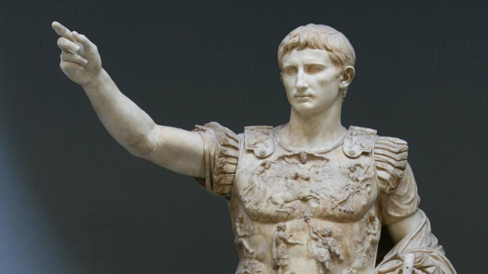
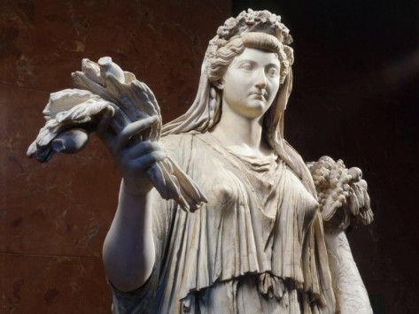
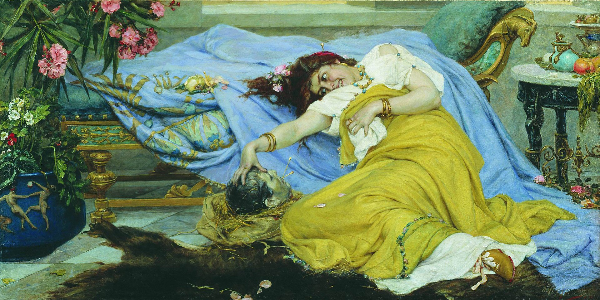
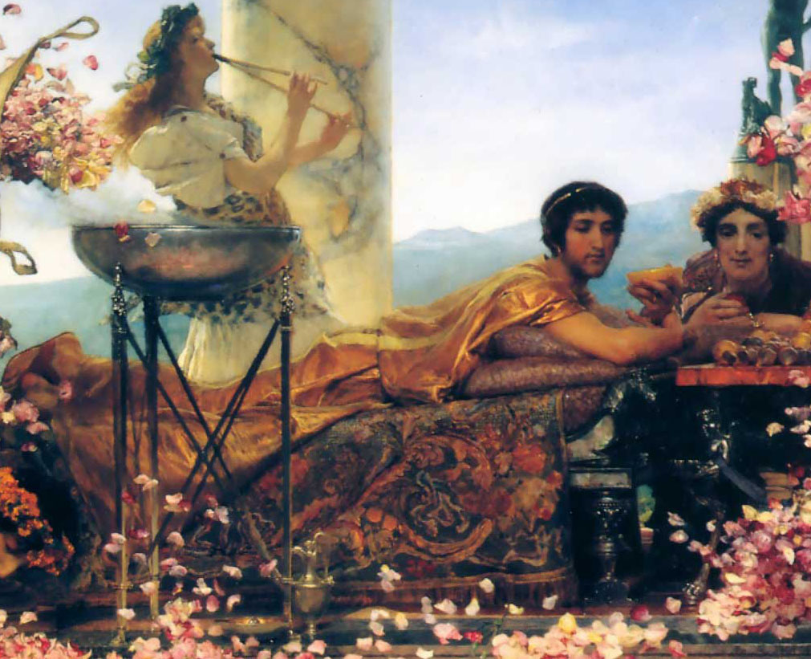
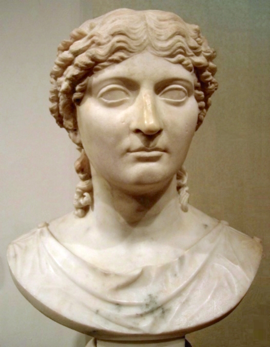
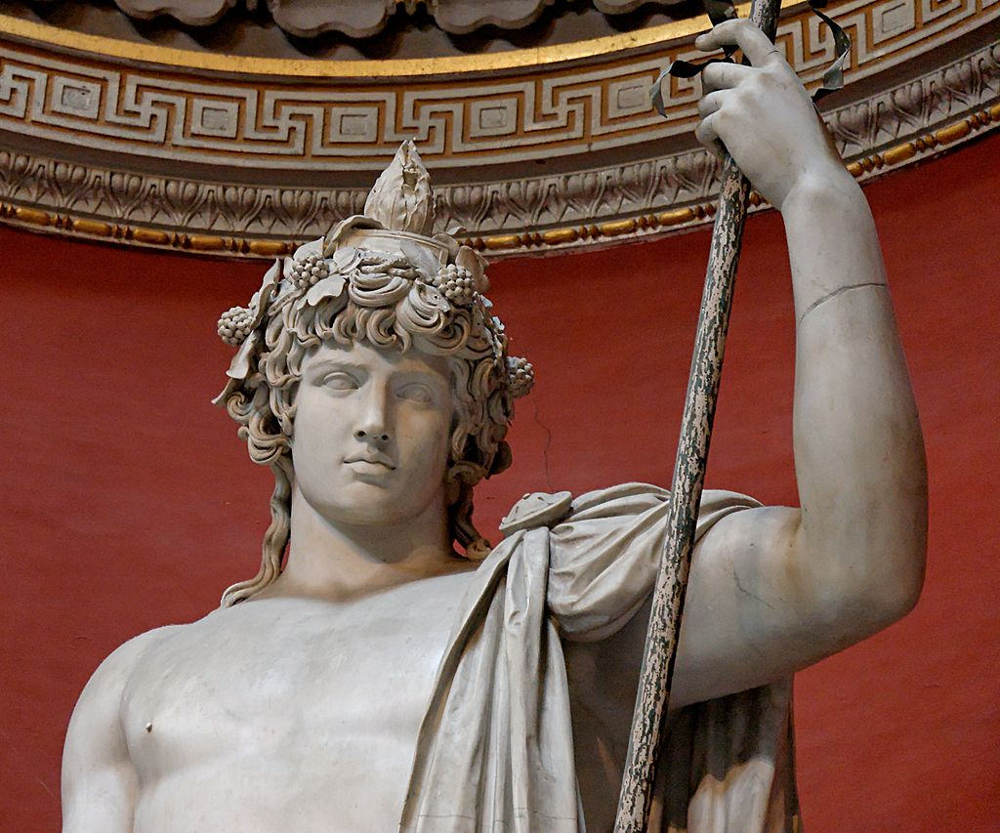

<!DOCTYPE html>
<html lang="en"></html>

<head>
    <title>Popular Figures</title>
    <link rel="stylesheet" href="style.css">
</head>

</body>

<div class="header">

<em><h1>Welcome to the the Popular Figures Page!</h1></em>
<p>This page shall introduce the viewers of this site detailed information about a handful of Rome's popular figures of which I wanted to discuss.</p>

</div>


<div class="topnav">
<il><a href="Society.html"><p>Society Page! </p></a>
<il><a href="Religion.html"><p>Religion Page! </p></a>
<il><a href="index.html"><p>Home Page! </p></a>

</div>

<em><b><h2>Popular Romans</h2></b></em>
<p>Some popular Romans who made history shall be noted here, a few of which I felt had to be mentioned as unique and provided the people of today an insight of how Roman society was like for these men and women who achieved a lot within their lives.
<p></p> From emperors and empresses, members of the LGBTQ community and tragic, perhaps even weird stories this is this is a overview of the people who made history!</p>


<h1><b><p>Political Genius</p></b></h1>

<ul></ul>

</div>

<h3><b><p>Origins</p></b></h3>

<ul>
    <li><p>Augustus Julius Caesar, born Gaius Octavius was the first Emperor of Rome officially as Princeps Senatus, he was the son of Atia Balba Caesonia and her husband, (also) Gaius Octavius. He is deemed by many as a political genius and is thought as one of the most successful men in Roman history.</p></li>
    <li><p>Augustus was born into a wealthy equestrian branch of the family, Gens Octavia, a family that also had close ties with Gens Julia. Augustus was a grand-nephew to Roman dictator, Julius Caesar. This is because his mother, Atia Balba Caesonia was the daughter born to Julia Minor who is the sister of Julius Caesar. Through his maternal relationships he has three aunts also named Atia Balba, however his mother is titled "Secunda" meaning the second daughter of her parents.</p></li>
    <li><p>Augustus had no brothers and only two sisters, Octavia Minor and Octavia Major however his older sister was born to the first spouse of his father and isn't as mentioned compared to his full-sister, Octavia the Younger (Minor).</p></li>
    <li><p>Due to the fact that Julius Caesar had no heirs and both of his grandsons had died, he had legally adopted Augustus and his name changed to Gaius Julius Caesar Octavianus.</p></li>

</ul>
</body>

<h3><b><p>Why is he popular?</p></b></h3>

<ul>
    <li><p>Augustus is popular because he was the founder of the Roman Principate (term used for the first imperial period) in which he was titled Princeps Civitatis and in technicality the first Roman Emperor.</p></li>
    <li><p>Considered to be one of the greatest leaders in human history, Augustus had ushered in a new era of Imperial peace and made plenty of changes to the Roman state to create the establishment known as the Roman Empire, he had also established the imperial cult which is associated with imperial peace. During his reign, the Roman world was largely free from large-scale conflicts and his long reign introduced two full centuries of peace, besides the Year of the Four Emperors, a succession crisis over the crown.</p></li>

</ul>
</body>

<h3><b><p>Rise to Power</p></b></h3>
<ul>
    <li><p>His maternal-great-uncle Julius Caesar was assassinated in the year 44 BC and since proving himself from a young age he had been the adopted son of Julius Caesar, therefore his heir by legal will.</p></li>
    <li><p>His inheirtance was a handful, as he was declared his son and legal heir he had inheirted his name, estate and the loyalty of his father's legions. In protest of the brutal death of his uncle and adoptive father, Augustus had formed the Second Triumvirate working alongside Mark Antony and Marcus Lepidus with the primary purpose of defeating those who had assassinated Julius Caesar.</p></li>
    <li><p>Following the Battle of Phillipi in 42 BC, the Roman Republic was divided amongst the coalition however the three-way de-facto dictatorship had failed and Augustus conquered over all, Lepidus was exiled in 36 BC.</p></li>
    <li><p>Mark Antony had cheated on his wife, Augustus' sister, Octavia the Younger and had sought refuge in Egypt where he had been a partner of Cleopatra, him and the Queen of Egypt were defeated at the Battle of Actium in 31 BC and Egypt became a Roman province under the name "Aegyptus."</p></li>
    <li><p>Augustus drastically enlarged the empire annexing Egypt, Dalmatia, Pannonia, Noricum and Raetia, he had completed a conquest in Hispania however suffered a huge setback attempting to conquer Germania.</p></li>
    <li><p>He secured a region of client states and made peace with the Parthian Empire, in addition to reforming the taxation system, developing roads and even established a transportation service. Forging the police force, the firefighter service and the Praetorian Guard.</p></li>
</ul>
</body>

<h3><b><p>Death</p></b></h3>

<p>Augustus died on the 19th of August 14 AD at the age of 75, surpressing the life expectancy impressively at the time, there are many theories surrounding his death including the idea that his wife poisoned him. In his lifetime he was Consul, Triumvir and Pontifex Maximus.</p>
<p>He was survived by a daughter, Julia the Elder born to his second wife Scribonia and was succeeded by his stepson, Tiberius born to his third and final wife, Livia Drusilla.</p>

<em>Names</em>

<ul>
    <li>Gaius Octavius Thurinus</li>
    <li>Gaius Julius Caesar Octavianus</li>
    <li>Imperator Caesar</li>
    <li>Imperator Caesar Augustus</li>
    
</ul>
</body>

<p>His daughter, Julia the Elder was exiled by her father due to a scandal and died the same year as Augustus at the age of 52. Although three of Julia's sons died, Augustus was also survived by her daughters, Agrippina the Elder and Julia the Younger as well as their offspring.</p>

</body>

<h1><b><p>Intelligent Empress</p></b></h1>

<ul></ul>

</div>

<h3><b><p>Origins</p></b></h3>

<body>
<ul> 
    <li><p>Livia was the daughter of a Roman senator, his name was Marcus Livius Drusus Claudianus and his wife, Alfidia. Livia originated from the Gens Livia which was a very illustrious plebeian family in ancient Rome. Livia was specifically from the branch of "Livii Drusi" who held the cognomen of "Drusus (male), Drusilla, Drusa" etc.</p></li>
    <li><p>Ironically, her father supported Brutus and Cassius, Augustus' rivals. The decision had a huge impact on Livia Drusilla and her family, tragically Claudianus killed himself in his tent to avoid being captured alive. </p></li>
    <li><p>The name "Drusilla" suggests that she was not her father's eldest daughter as per Roman naming conventions, she had an older sister. It is possible she had a biological brother, however her father had adopted a son.</p></li>
    <li><p>Before meeting Augustus, Livia Drusilla was married in 43 BC to Tiberius Claudius Nero who fathered both her sons, Drusus the Elder and Tiberius. She had no children with Augustus once she had married him.</p></li>


</ul> 
</body>

<h3><b><p>Why is she popular?</p></b></h3>

<body>

    <ul>
        <il><p>Livia Drusilla is the first Empresss of Rome who exceeded power like no other woman had done within Roman history.</p></il>
        <il><p>Because of all the theories surrounding her actions as wife of Augustus and Empress Dowager, Livia Drusilla is popular in art and literature. She was portrayed in HBO's Rome series and a specialised series was dedicated to her named "Domina" which heavily focuses on the life of the first empress.</p></il>
        <il><p>The power Livia achieved was surprising and unrealistic, a lot like a fantasy for the time period making her a figure historians are curious about.</p></il>

    </ul>
    </body>

<h3><b><p>Rise to Power</p></b></h3>

<body>

    <ul>
        <li><p>Livia Drusilla was introduced to Augustus (Octavian) in the year 39 BC. At the time Livia Drusilla already had a son named Tiberius and was pregnant (which would later be her second son Drusus). Legends state that Octavian instantly fell in love with Livia Drusilla, despite the fact that he was married to Scribonia who had bore his daughter. Octavian officially divorced Scribonia on the 30th October 39 BC, the very day she gave birth to Julia the Elder. Livia at the time was six months pregnant when Octavian either persauded or forced Tiberius Claudius Nero to divorce Livia Drusilla which favoured Octavian's interests to marry her instead. On the 14th of Janurary, Drusus the Elder was born. Augustus believed that Livia was fertile, however to much dissapointment as she bore him no children.</p></li>
        <li><p>Livia and Augustus would remain married for the next 51 years and she enjoyed the privlige of being his most closest advisor. She was influential because she was able to exert her persuasiveness to Augustus and consequently influencing his policies - within the political sphere it was noted that Livia was very active which was very unusual for the time and against Rome's patriarchal rules. Livia Drusilla is recorded to have officiated her role as Roman empress in the year 27 BC.</p></li>
        <li><p>Following Augustus' victory at the Battle of Actium in 31 BC, Livia Drusilla's husband, Augustus had reassured his power and had recieved the title "First Citizen" (Translated as Princeps Civiatis). Livia would use her position as Empress to influence other women within the Roman state and made herself a role model to other Roman matrons. She and her husband lived modestly, avoiding excess in pleasurable things such as jewellery and lavish spending. Livia was granted independence financially and Augustus dedicated a statue to her, she owned several estates and even governed copper mines in Gaul. She had her own circle of clients - many of which she pushed into the political sphere and used towards her own advantage.</p></li>
        <li><p>Livia pushed her own sons into authority with the purpose of reassuring her firstborn son, Tiberius' place as his stepfather's successor - partially as to why he was legally adopted by Augustus was because he had no sons of his own. There are many speculations that Livia Drusilla was behind the murder of Marcellus, Augustus' nephew and even plotted the downfall of her stepdaughter's family and her orchestration ruined them.</p></li>
        <li><p>Livia enjoyed her status as Empress Dowager after Augustus died at the age of 75, it was speculated that she poisoned Augustus as well. Eventually, Tiberius issued an edict where speaking ill of the Empress Dowager became a treasonous act. It appears she got along well with Tiberius who was however envious of her political power and the idea that she gave him his throne. It was even believed she held a status above that of her own son.</p></li>

    </ul>
</body>

<h3><b><p>Death</p></b></h3>
<body>

    <ul> 
        <il><p>Livia Drusilla was said to have interfered with the decisions of her son very much to the extent he found her intolerable and Tiberius retired to Capri. In 22 AD, Livia Drusilla fell ill and Tiberius rushed back to Rome to be by his mother's side. Livia Drusilla had expired at the remarkable age of 87, Claudius defied Livia in 42 AD and acknowledged her title of Augusta.</p></il>
</ul>
</body>

<em>Names</em>

<ul>
    <li>Livia Drusilla</li>
    <li>Julia Augusta (as of 14 AD)</li>
    <li>Diva Augusta (alias as of 42 AD)</li>
    
</ul>
</body>

<p>Livia's honours were removed but was later restored by her grandson, Claudius 13 years after her death in 42 AD and her statue was built in the Temple of Augustus. She was titled Diva Augusta (Divine Augusta) and was one of the few women in Roman history to recieve the title 'Augusta.'</p>


<h1><b><p>Crazy Schemer</p></b></h1>

<ul></ul>


<h3><b><p>Origins</p></b></h3>

<body>
    <ul>
        <li><p>Fulvia was born into the late Republic period, she was born into Gens Fulvia which was politically active during the late Republic. She was raised in either Rome or Tusculum but it is isn't certain, additionally her date of birth isn't known. The members of Gens Fulvia (Fulvii) were one of the most prestigious Republican (yet plebeian) wealthy families in Rome; various members of the family were elected as Consuls and became senators.</p></li>
        <li><p>Fulvia was the only child and daughter of Marcus Fulvius Bambalio and Sempronia, both  of her parents originated from families of which exceeded great power in the Roman state therefore she was seen as a high value woman.</p></li>
        <li><p>Her father was recorded to have been hesitant to speak, earning the nickname "Bambalio" literally meaning "to stutter" and her maternal grandfather Sempronius Tuditanus was described as a "madman" by Cicero due to the fact he enjoyed to throw money in public.</p></li>
    
    
</body>
</ul>

<h3><b><p>Why is she popular?</p></b></h3>
<p>Fulvia is popular because of her politically motivated marriages and her participation within the public sphere. Fulvia remains an important figure in ancient Roman history due to her place as a woman and heavily involved in politics as well as her role in the Perusine War against Octavian (Augustus). she was highly interested in politics and developed an increasingly strong public voice over time.</p>
<p>Alongside Livia Drusilla, she was the first Roman non-mythological woman to have her face minted on Roman coins.</p>

<h3><b><p>Rise to Power</p></b></h3>

<body>
    <ul>
        <li><p>Her first marriage was to Publius Clodius Pulcher in the year 62 BC the couple had two children together, a son also named Publius Clodius Pulcher and a daughter, Claudia. It was reported that the couple travelled everywhere together. Her eldest daughter, Claudia was the first wife of Augustus until he divorced her in 40 BC and then married Scribonia, who he had also divorced until he had finally married Livia who had remained by his side until his death.</p></li>
        <li><p>In 52 BC, Fulvia's husband Clodius decided to run for the position of praetor within the Senate, however he had angered his political rival named Titus Annius Milo - Milo was so vexed that he had decided to escalate to violence and had Clodius murdered by his gang on Janurary 18th. The incident occured on the Appian Way. Fulvia first apppears in historical records providing testimony against Milo, in which results in the recieving of justice. Milo was exiled for his crime.</p></li>
        <li><p>Ironically, Clodius had also owned many gangs and Fuliva maintained the power and status that came with their loyalty, there is historical evidence to suggest that she was involved in creating a collegia. Fulvia had displayed a strong political potential and avenged her husbands death. After his death, Fulvia invested her time into the political sphere as a reminder of her late spouse.</p></li>
        <li><p>When Pompey had surpressed his rivals and obtained power in Rome, all of Clodius' supporters were forced out of the city leaving Fulvia without support to continue her schemes and her lack of support halted her influence and her political prowess. However, fortunately for Fulvia her widowhood was not long lasting and she remarried  Gaius Scribonius Curio, who had returned from Asia. She married him in either 51 or 52 BC and he had continued Clodius' policies, although his family was lower in prestige Curio may have been wealthier compared to Fulvia's first spouse. Curio won his election as tribune and there is evidence proving that his marriage to Fulvia won the support of Clodian supporters and Julius Caesar.</p></li>
       
</ul>
</body>
       
<p>Curio died in 49 BC, soon after Fulvia may have delivered his son. He was killed during the Battle of the Bagradas which took place in Africa.</p>
<p>The death of Curio left Fulvia a very imporant widow in elite circles, she had money and political organisation which attracted many suitors. Fulvia's final husband was the all famous Mark Antony who she wed in either 49 or 46 BC, however Cicero suggests that she was having an affair with Antony since 58 BC.</p>
<p>Fulvia's marriage to Antony was not one where the wife was inferior, rather, they had been described as a "formidable political force." The couple had two sons together; Marcus Antonius Antyllus and Iullus Antonius. Fulvia played a very influential role in Mark Antony's political career. She was the orchestrator of many of Mark Antony's policies.</p>
<p> Fulvia raised eight legions in Italy to fight for Antony's rights against Octavian, which was known as the "Perusine War." he army occupied Rome for a short time, and Lucius organized his troops at Praeneste, but eventually retreated to Perusia (modern Perugia), where Octavian besieged him, however Antony was unaware of the incident. The siege at Perusia lasted two months before Octavian starved Lucius into surrender in February 40 BC. After Lucius' surrender, Fulvia fled to Greece with her children. Appian writes that she met Antony in Athens, and he was upset with her involvement in the war.</p>

<h3><b><p>Death</p></b></h3>
<body>
    <ul>
        <il><p>Fulvia died of an unknown illness in exile in Sicyon, near Corinth, Achaea. Antony saved himself by accusing Fulvia of all the crimes that he was accused of and he later married Octavia the Younger and she took in the children mothered by Fulvia.</p></il>
        
</ul>
</body>

<em>Fates of her children</em>

<ul>
    <li>The fate of Fulvia's daughter, Clodia Pulchra after her divorce from Augustus is unknown, there is a theory suggesting she remarried.</li>
    <li>Her son Marcus Antonius Antyllus was executed in Alexandria, his death warrant issued by Augustus.</li>
    <li>Her youngest child, Iullus Antonius, was left unharmed by Augustus and was sent to be raised by Octavia the Younger. He later married Claudia Marcella Major, Octavia's daughter and their union produced two children.</li>
    
</ul>
</body>


<h1><b><p>Wild Teen</p></b></h1>

<ul></ul>


<h3><b><p>Origins</p></b></h3>
<body> 
    <ul>
        <li><p>Marcus Aurelius Antoninus "Elagabalus", born Sextus Varius Avitus Bassianus was born in 203 or 204. His last name being apparently a cognomen of the Emesene dynasty.</p></li>
        <li><p>His mother was Julia Soaemias, she was a cousin of the emperor Caracalla, and there were rumors that Caracalla had fathered Elagabalus. Apparently Elagabalus had a brother, however there are no historical records about him. Elagabalus was fathered legally by Sextus Varius Marcellus, a politician from Syria, which was a province of Rome.</p></li>
        <li><p>Elagabalus's grandmother, Julia Maesa, was the widow of the consul Julius Avitus Alexianus and the sister of Julia Domna, who was Roman empress for Septimius Severus.</p></li>


</ul>
</body>

<h3><b><p>Why is he popular?</p></b></h3>
<p>Elagabalus is popular because he is believed to have been a transsexual, he prefered the pronouns she/her and historical records indicate that he had engaged in homosexual activity. Additionally, he had even crossdressed so he can appear as if he was a woman instead of a man.</p>
<p>Elagabalus is also known because of his disregard for Roman religious traditions and taboos. He married four women, including a Vestal Virgin and favoured many male courtiers who people believed were his lovers. He had developed a reputation due to his promiscious and reckless behaviour, as well as his incompetence.</p>

<h3><b><p>Rise to Power</p></b></h3>
<body>
    <ul>
        <li><p>Elagabalus and his family were exiled to Emesa in Syria, once he had arrived Julia Maesa began a plot with her advisor and Elagabalus's tutor, Gannys, to overthrow Macrinus and elevate the fourteen-year-old Elagabalus to the imperial throne. Maesa spread a rumor, which Soaemias publicly supported, that Elagabalus was the illegitimate child of Caracalla and therefore deserved the loyalty of Roman soldiers and senators as his legal successor. The soldiers of the Third Legion may have been bribed to support Julia Maesa's story, however it is recorded that they had enjoyed better lives under Caracalla.</p></li>
        <li><p>Elagabalus was declared the legitimate emperor by Publius Valerius Comazon, commander of the third legion.</p></li>
        <li><p>Elagabalus's legionaries, commanded by his tutor, had defeated emperor Macrinus and their Praetorian Guard at the Battle of Antioch on the 8th June 218. The senators responded by acknowledging Elagabalus as emperor and accepting his claim to be the son of Caracalla. In the year 218, Elagabalus served as Consul.</p></li>
        <li><p>It is known that Elagabalus popularly favoured athlete Aurelius Zoticus who is said by Dio to have been one of the emperor's male lovers. Other sources state that Zoctius was actually a legal husband of Egalabalus as homosexual relationships were permissable in Rome. His mother,  Julia Soaemia and his grandmother Julia Maesa were strong supporters of his reign and are just part of the handful of influential Imperial women in ancient Roman history. They were the very first women legally permitted to involve themselves with the Senate.</p></li>
        <li><p>Historians tend to confirm that Elagabalus was a transgender as he prefered to title himself a lady, instead of a lord and was willing to reward any physician handsomely if they were capable of performing gender reassignment surgery. It is noted he married an ex-slave named Hierocles and called himself "his wife."</p></li>
        <li><p>To secure her power, Julia Maesa leaned forward towards another grandson of hers named Alexander and Elagabalus practically shared his power with his cousin, more so to the extent that Elagabalus suspected the Praetorian Guard of prefering Alexander over him. To test the loyalty of his soldiers, Elagabalus spread a rumour that Alexander was dying. This rumour outraged the guards who ordered that Alexander and Elagabalus be seen at the Praetorian camp.</p></li>
</ul>
</body>

<h3><b><p>Death</p></b></h3>

<p>The emperor complied and on 11th or 12th March in the year 222 he presented himself, Alexander and his mother and the soldiers began cheering for his cousin, Alexander. Elagabalus became jealous and ordered the submission of the Praetorian Guard, in response they had attacked Elagabalus and his mother. Theey were brutally executed, Elagabalus was 18 years of age and his mother was either 41 or 42 years old at their time of murder.</p>
<p>The late emperor's mother, Julia Soaemias was later declared a public enemy and her name was erased from all public records. Any portrayals of Elagabalus was replaced with that of his cousin, Alexander Severus who succeeded him as Emperor.</p>

</ul>
</body>

<h1><b><p>Ruthless Mother</p></b>

<ul></ul>


<h3><b><p>Origins</p></b></h3>
<body>
    <ul>
        <li><p>Agrippina was the first daughter and fourth living child of Agrippina the Elder and Germanicus, her full name is Julia Agrippina, however is popular as "Agrippina the Younger" due to her mother sharing her name.</p></li>
        <li><p>Her mother was the daughter of Julia the Elder and Marcus Vipsanius Agrippa making Agrippina the Younger a granddaughter of Rome's first emperor, Augustus. Her father, Germanicus was fathered by Drusus the Elder, the son of Rome's first Empress making Agrippina the Younger a direct descendant of Livia Drusilla. Additionally, Agrippina's maternal grandmother was Antonia Minor making Agrippina the Younger a direct descendant (great-granddaughter) of famous Roman, Mark Antony who is popular for his statesmanship and affair with Ptolematic Egyptian queen, Cleopatra.</p></li>
        <li><p>Agrippina was born on the 6th of November in AD 15, or possibly 14 AD at a Roman outpost which is located to be Cologne, in Germany. She had three brothers and two sisters. One of her brothers was Caligula, an infamous Roman emperor. Throughout her childhood she lived in Germany and was later raised in Rome with her grandmother, Antonia. Later two of her sisters were born, Julia Drusilla who was named after Livia Drusilla and Julia Livilla who was born on the island of Lesbos.</p></li>
        <li><p>Her father, Germanicus died suddenly in October within the year 19 AD in her early life, she was later raised by Antonia Minor and her mother Agrippina the Elder. Her father's death caused plenty of grief in Rome and even rumours that he was murdered. Frightened, Agrippina the Younger was educated by powerful figures such as Livia Drusilla with teachings on how to survive in such a cruel world. She is noted to have resided on Palatine Hill in Rome.</p></li>
    
</ul>
</body>

<h3><b><p>Why is she popular?</p></b></h3>
<p>She is popular for her beauty in some Roman sources however her personality dictated by historians at the time and by modern historians believe that Agrippina the Younger was ruthless, ambitious and domineering. Not only for her beauty, she had an Imperial reputation that she upheld and is popular for manuvering the throne for her own son, Nero.</p>
<p>Working with her powerful political circles, Agrippina the Younger ran the Roman Empire from behind the scenes and was an influencer of important state affairs, resembling the same type of tenure Livia Drusilla had as empress consort.</p>
<p>She  is also popular due to her politically motivated marriages, her most popular one being Claudius and she is also responsible for ushering in a new family (Gens Domitia) into Imperial rule</p>


<h3><b><p>Rise to Power</p></b></h3>
<body>
    <ul>
        <li><p>Agrippina the Younger marries Gnaeus Domitius Ahenobarbus after she turns 13 in the year 28. Her first husband originated from the Domitia family who held consular ranking and Ahenobarus' younger sister would go onto mothering Valeria Messalina, who would later become Roman empress. She would have one son with her husband, Nero.</p></li>
        <li><p>Agrippina's uncle, Tiberius died and her brother, Caligula succeeded his uncle as the Roman emperor and Agrippina alongside her sisters were accused of incestious relationships - due to this incident Agrippina was found guilty of being an acessory to crime.</p></li>
        <li><p>In January of AD 40, Domitius died of dropsy while Agrippina was exiled, Caligula, his one year-old daughter and his wife were brutally murdered by the Praetorian Guard and Agrippina's uncle became Emperor.</p></li>
        <li><p>When Agrippina returned from exile she was slapped publicly by Galba's mother in law, later Agrippina remarried to Gaius Sallustius Crispus Passienus another successful Roman statesman, little is known about their relationship except Crispus left his estate to Nero and he died shortly after marrying Agrippina. Due to her background, Agrippina became very influential but kept a low profile to protect herself. In 47, Crispus died and rumours spread that she murdered her husband as she was now left with a lot of wealth.</p></li>
        <li><p>The people of Rome pitied Agrippina due to the unfortunate circumstances that she went through and this also aided her rise to power.  In 48 for conspiring with Gaius Silius, Valeria Messalina was disposed as empress consort for Claudius and he then married Agrippina the Younger - this was in spite of the fact that the marriage was disapproved and speculations arising that Agrippina wanted to make her own son emperor. Weirdly enough, Claudius was Agrippina's uncle.</p></li>
        <li><p>Agrippina appears to have followed the footsteps of her late great-grandmother, Livia Drusilla and became an important member of the elite - having exerted a lot of influence and quickly became a trusted advisor to Claudius in 54 AD, additionally she was in a privliged position to exert her power and authority because she was the new Empress. She also claimed auctoritas (power of commanding) and Autokrateira (Self-ruler as empress) in a public display and Claudius even named a Roman colony after her.</p></li>
        <li><p>Claudius died in 54 AD at the age of 63 and Agrippina kept his death a secret long enough to secure Nero the throne. She abused her influence to the extent she lived as if she was a co-emperor and a power struggle between mother and son was produced.</p></li>
</ul>
</body>


<h3><b><p>Death</p></b></h3>

<p>There are many accounts surrounding her death, however what is for certain is that Agrippina the Younger was murdered by her son. She is believed to have been attacked or drowned during a boat crash. Some theories indicate that Agrippina committed suicide or that she somehow "fell into water."</p>
<p>According to Tactius, in 58, Nero became involved with the noble woman Poppaea Sabina, she teased him for being a "mummy's boy" and he was already trapped in a marriage with Claudia Octavia who was the daughter of Claudius with his first wife, Valeria Messalina. So in order to marry Poppaea he had killed Agrippina.</p>
<p>According to Suetonius, Agrippina's controlling attitude she had over state affairs and abusing her position as Empress Dowager is what drove Nero to murder her.</p>
<p>According to Dio, Poppaea Sabina is behind Agrippina's murder and that a ship was designed specifically with a trap door in which Agrippina fell through and drowned.</p>

<em>Notes</em>

<ul>
    <li>Her full name was Julia Agrippina and she was the fourth wife and niece of Claudius.</li>
    <li>Her only child and son Nero committed suicide at the age of 30.
    <li>She had a double canine in her upper right jaw which was seen as a sign of good fortune.</li>

</ul>
</body>

<p>Agrippina the Younger died in the year 59 AD, she was 43 years old.</p>


<h1><b><p>Tragic Lover</p></b></h1>

<ul></ul>


<h3><b><p>Origins</p></b></h3>

<body>
    <ul>
        <li><p>Antinoös (Greek), also called Antinous (Latin) was a Greek peasant from Bithynia. </p></li>
        <li><p>Antinous was born to a Greek family near the city of Claudiopolis which is a place located in Bithynia, the place of his birth was one of the many roman provinces.</p></li>
        <li><p>The year of his birth date is not recorded, however sources speculate he was born between 110 and 112 CE possibly in the month of November, it is speculated that the exact date in November is the 17th although we don't actually know.</p></li>
        <li><p>Although Antinous was from Greek, his physical appearance and location of birth speculate that he didn't have any Greek ancestry, according to Lambert he belonged to a working class family but was not from the poorest of society and would've been rich enough to afford a basic education (such as reading and writing).</p></li>
</ul>
</body>

<h3><b><p>Why is he popular?</p></b></h3>

<p>Antinous is popular because of his romantic association with Hadrian, one of Rome's emperors.</p>
<p>For someone who was a Greek slave, he had wielded some powerful form of influence onto Hadrian. The emperor had named a place in Egypt under the name "Antinoöpolis", after him and Hadrian even defied him as a god after his death, a cult was opened in his name and he was worshipped within the Roman Empire - even after Hadrian's death.</p>
<p>Antinous became an icon for male homosexuality in the western world, he has appeared in the works of poet Oscar Wilde and Portugese poet Fernando Pessoa.</p>

<h3><b><p>Rise to Power</p></b></h3>
<body>
    <ul>
        <li><p>Hadrian tended to tour around the empire often, he had visited Claudiopolis in June of the year 123, which was possibly the month and year where he had first met Antinous, it is believed he had been schooled in Italy at Caelian Hil, which is a famous hill in Rome. Hadrian returned to Italy in September of 125 and around that point Hadrian enlisted Antinous as a member of his retinue.</p></li>
        <li><p>It is believed that Hadrian was a homosexual because he had expressed no sort of attraction for women whatsoever and his wife, Vibia Sabina was widely neglected and he didn't treat her right either.</p></li>
        <li><p>Hadrian developed some sort of infatuation for Antinous, for centuries it was the social norm for homosexual relationships to be practiced and bisexuality was practiced by the upper class by the early 2nd century.</p></li>
        <li><p>Antinous and Hadrian were a couple who enjoyed many things together, and Hadrian believed that Antinous was wise and intellectual - the two also loved to hunt together.</p></li>
        <li><p>Hadrian is noted to have saved his lover from a Marousian lion and it is believed that Antinous never used his position to gain political prowess.</p></li>
</ul>
</body>

<h3><b><p>Death</p></b></h3>

<p>In late September or early October in the year 130 the emperor and his entourage (incluing Antinous) had arrived at Heliopolis in Egypt where they travelled on a ship among the River Nile, it is noted that Antinous was met with an incident and had fell into the river, consequently dying most likely due to drowning. When the emperor announced the death of his beloved, there were rumours that perhaps Antinous was intentionally murdered - likely from someone who was envious of his relationship with the emperor.</p>

<em>Theories around his death</em>

<ul>
    <li>One possibility is that he was murdered by a member of the emperor's court</li>
    <li>Some scholars suggest that Antinous was killed by Hadrian due to an argument</li>
    <li>Another accepted possibility is that Antinous castrated himself in an attempt to restore his youthful appearance and died due to blood loss.</li>
    <li>Another possibility is that Antinous was perhaps drunk or an accident occured.</li>
    <li>A final possibility is that Antinous sacrificed himself in an appeal to retain Hadrian's poor health.</li>

</ul>
</body>

<p>Antinous died in the year 130 and was tragically only 18 or 19 years old when he had died.</p>

</div>


<em><p>You can check out the quiz below to test out your knowledge!</p></em>
 <a href="https://quizlet.com/gb/725128806/ave-roma-flash-cards/">Visit the quiz!</a>


</div>

<body>

    <style>
        body {
            background-color: rgb(80, 4, 4) ;
            color:rgb(250, 193, 154)
        }
    
    </style>
    </html>
